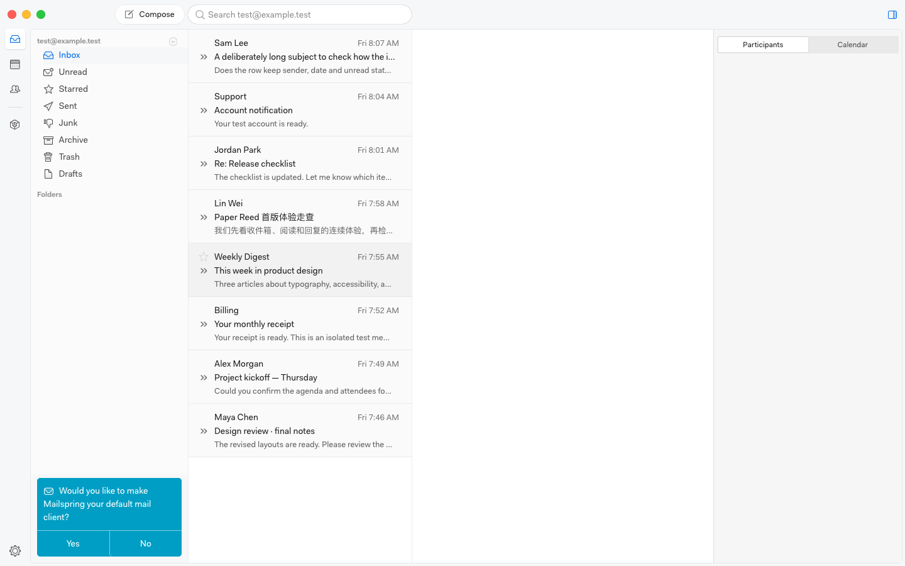
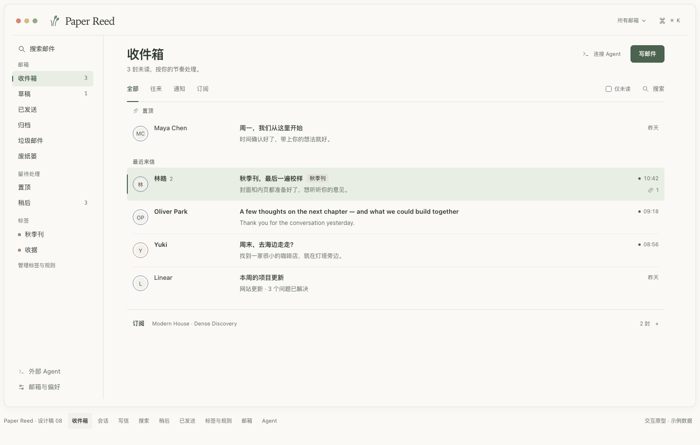
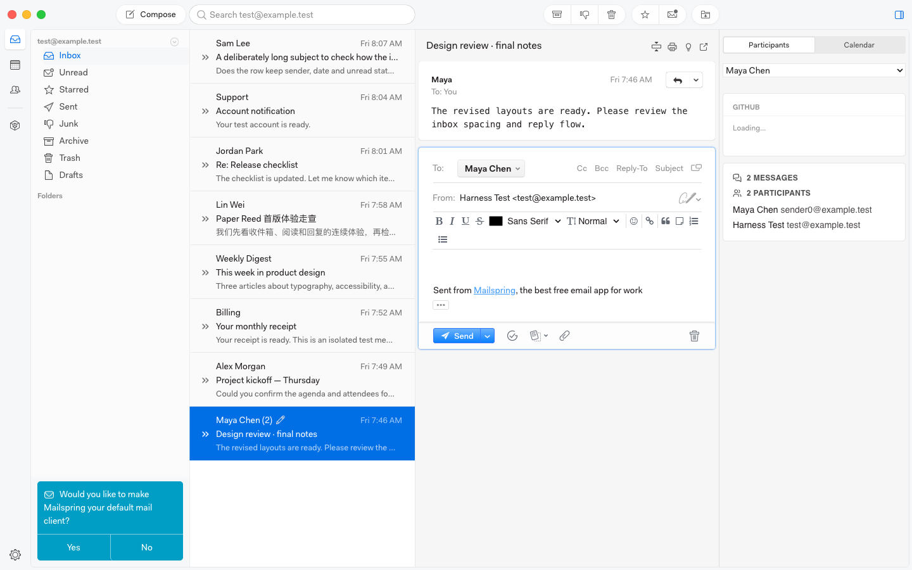
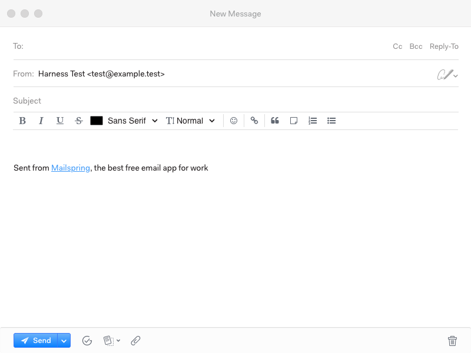
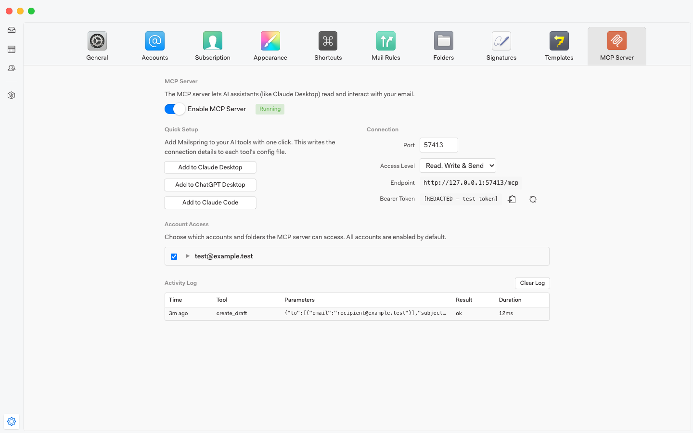
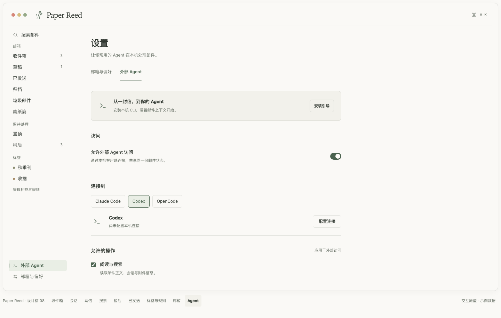
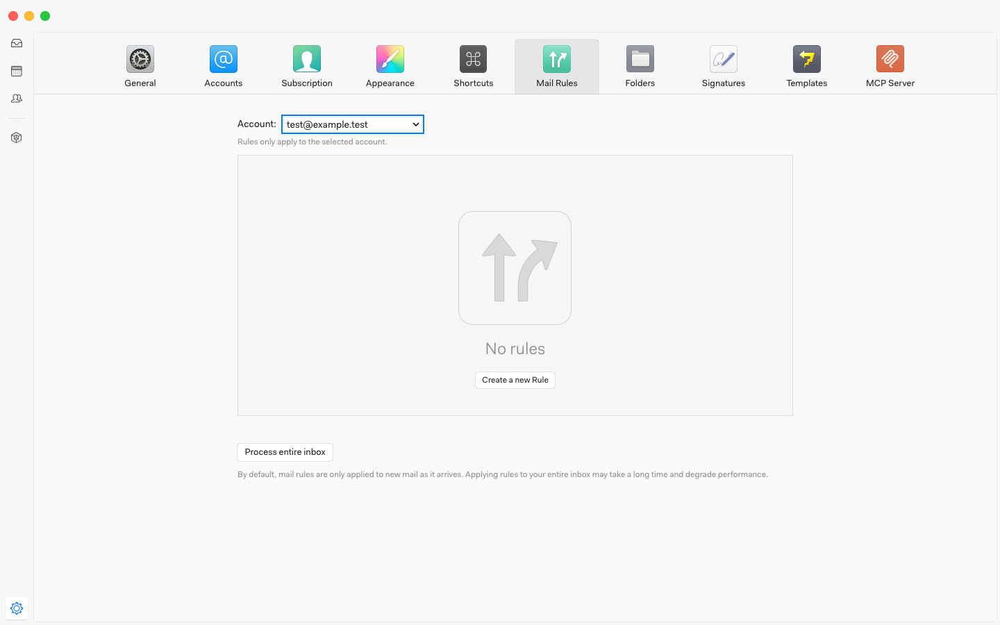
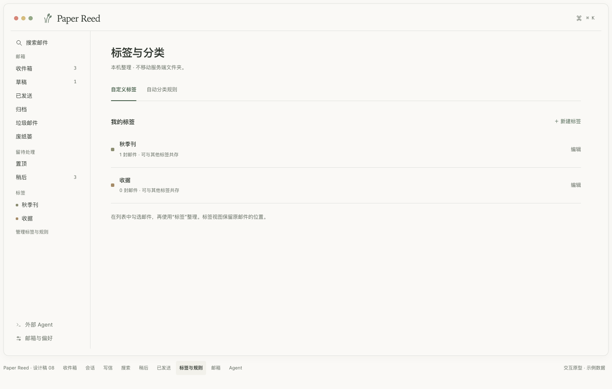
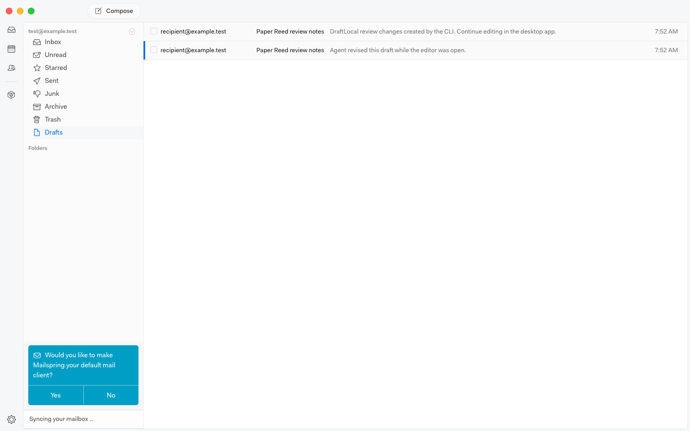

保存中、已保存到本机、冲突、发送待确认应持续可见；另存后能直接定位副本。











核心已经能工作，完整的用户体验还没有接起来。
实机：隔离测试邮箱与真实引擎。设计：现有 HTML 原型。两者不是同一套示例内容。









列表、账号色环、分类和导航尚未接入 Paper Reed 设计。
主窗口 1440×900；截图已缩放。可放大后滚动查看。
保存中、已保存到本机、冲突、发送待确认应持续可见；另存后能直接定位副本。
先接收件箱、会话／回复、写信三个页面；统一版心与动作位置，释放正文空间。
复用已有 MCP 配置，增加当前对象入口；区分安装、连接与交接成功。
本机置顶、稍后、标签与服务端文件夹分开，不能只给上游操作改名。
只做审查，未改产品界面。冲突提示选择通过适配器完成；原生对话框外观未验收。真实授权、多账号、附件、离线和键盘完整体验另行验证。